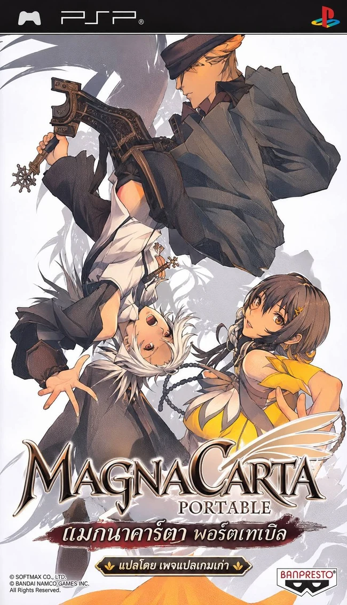

Magna Carta Portable
บนทวีปอิเฟเรีย มนุษย์กับชาวยาซอนทำสงครามกันมาหลายชั่วอายุคน คาลินทซ์ หัวหน้ากองวายุแดง ใช้ชีวิตไล่ตามการแก้แค้น จนได้พบรีส หญิงสาวที่สูญเสียความทรงจำ การตามหาอดีตของเธอค่อย ๆ เปิดเผยความลับของสงคราม และทำให้เขาต้องถามตัวเองว่าอยากใช้พลังที่มีเพื่อแก้แค้นหรือเพื่อปกป้องใครกันแน่
แปลโดยเพจแปลเกมเก่า
แพตช์ภาษาไทยบนเว็บ
ใช้ ISO ญี่ปุ่น ULJS00042 รุ่น 1.03 ชื่อ Magna_Carta_Portable_JPN_PSP-DMU.iso ฐานที่ใช้ทดสอบมาจาก RetroGameTalk
เบราว์เซอร์ตรวจ SHA-256 ก่อนเริ่มและสร้าง ISO ไทยแยกออกมา ต้นฉบับคงเดิม เลือกไฟล์ ISO ที่แตกจากไฟล์บีบอัดแล้วและเปิดหน้านี้ไว้จนเสร็จ
ทดสอบใน PPSSPP แล้วในช่วงเปิดเกม เมนู บทสนทนา และบันทึกกับโหลด บางภาพและข้อความยังคงต้นฉบับ ชื่อบางส่วนในหน้ารายละเอียดเซฟของ PSP ยังเพี้ยน และยังไม่ได้ทดสอบเล่นจนจบ